A beautiful kitchen does not need to shout for attention.
Japandi kitchen decor works because it creates a space that feels calm, warm, practical, and quietly beautiful all at once.
Think natural wood, soft neutrals, simple cabinetry, handmade ceramics, and just enough texture to keep everything from looking flat.
I have always liked kitchens that look collected rather than decorated within an inch of their lives.
Japandi gets that balance right.
You can keep the counters fairly clear without ending up with a kitchen that feels cold or completely personality-free.
And honestly, who wants a kitchen that looks like nobody actually cooks in it?
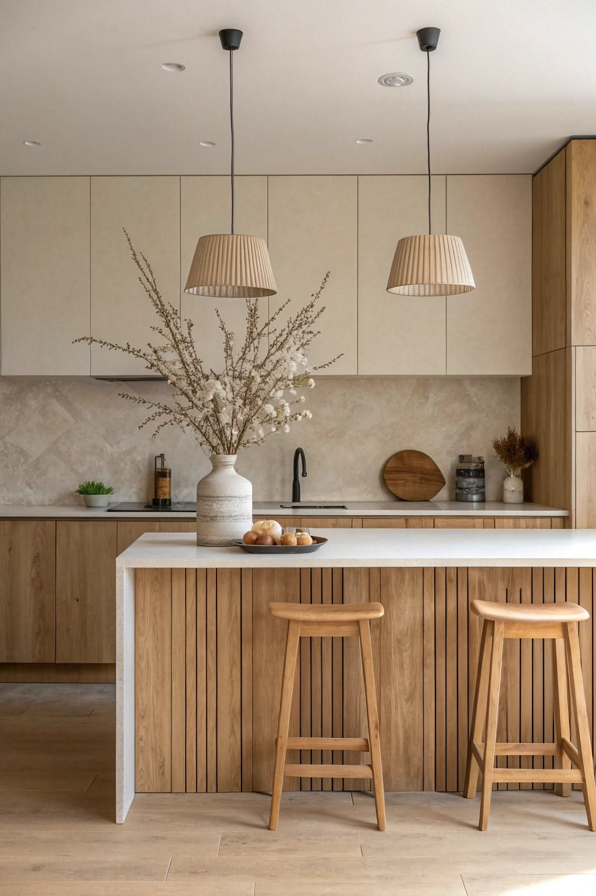
Common Mistakes to Avoid With Japandi Kitchen Design
You can get the overall concept right and still miss the actual feeling.
One common mistake is leaning on too much white.
A completely white kitchen with a few wooden accessories can read as Scandinavian, but it often misses the earthy depth that Japandi usually brings with it.
Another mistake is buying too many matching accessories.
Perfect coordination can actually strip away the character that handmade, natural pieces are supposed to provide.
A few more worth watching for: overdecorating open shelves, using too many different wood tones at once, choosing extremely cool white lighting, adding excessive black accents, using glossy finishes everywhere, filling every empty inch of countertop, and mixing too many competing patterns in one room.
The best Japandi kitchens usually feel quiet, tactile, functional, and personal all at the same time.
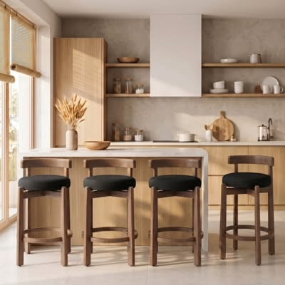
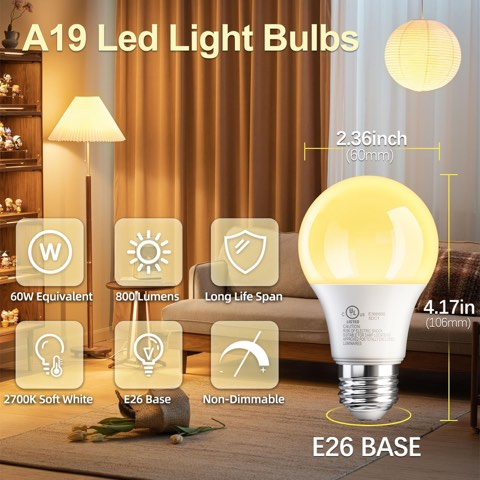
TJOY 6 Pack A19 LED Light Bulbs, Soft Warm White 2700K, 60 Watt Equivalent
Shop on Amazon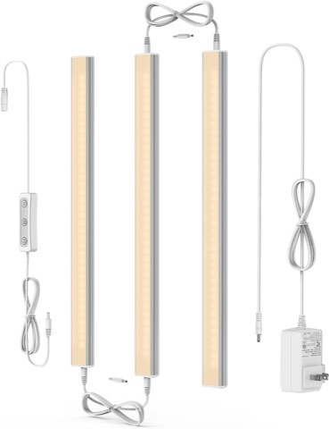
ASOKO Dimmable LED Under Cabinet Lights, 2700K, 3 Pcs, 12 Inch, Linkable
Shop on AmazonHow to Make Japandi Kitchen Decor Feel Warm Instead of Cold
This question comes up a lot, because minimalism can slide into sterile pretty easily if you are not paying attention.
The fix is layering texture instead of adding clutter.
Use wood against stone.
Pair smooth cabinetry with handmade ceramics.
Add woven stools beside a clean-lined island.
Introduce warm lighting against pale walls.
Earthy colors help soften the space too.
Try warm beige, mushroom, taupe, soft brown, muted olive, charcoal, cream, and warm white.
The combination creates real visual warmth without ever needing a bright color in the mix.
And remember, Japandi does not mean boring.
It means intentional.
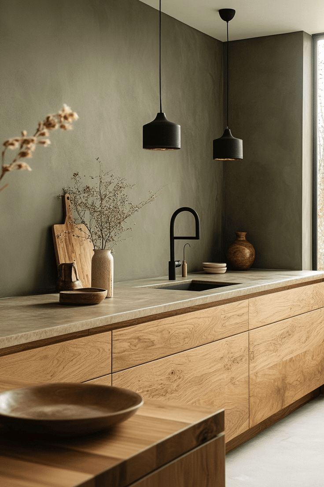
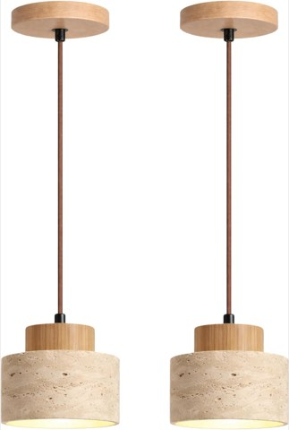
Natural Travertine Stone Pendant Light with Wood Accent, Farmhouse Rustic
Shop on Amazon20 Japandi Kitchen Decor Ideas
Now for the fun part.
These range from larger design choices to small styling details, so there is something here whether you are planning a full renovation or just refreshing the kitchen you already have.
1. Keep Your Japandi Kitchen Decor Clutter-Free
This one sounds obvious, but it might matter more than everything else on this list combined.
Japandi depends on visual calm.
If every countertop is covered in appliances, jars, decorative signs, cookbooks, plants, trays, and roughly seventeen things you forgot to put away, the whole aesthetic disappears fast.
Start by removing anything you rarely use.
Then group whatever you actually need.
Finally, give your favorite pieces enough room around them to breathe.
Decluttering first is usually the right move when bringing this style into a home, since the whole aesthetic leans on minimalism and a genuine less-is-more approach.
At the end of the day, a home, your own home especially, should just feel good to be in. That idea might capture Japandi better than any specific decorating rule ever could.
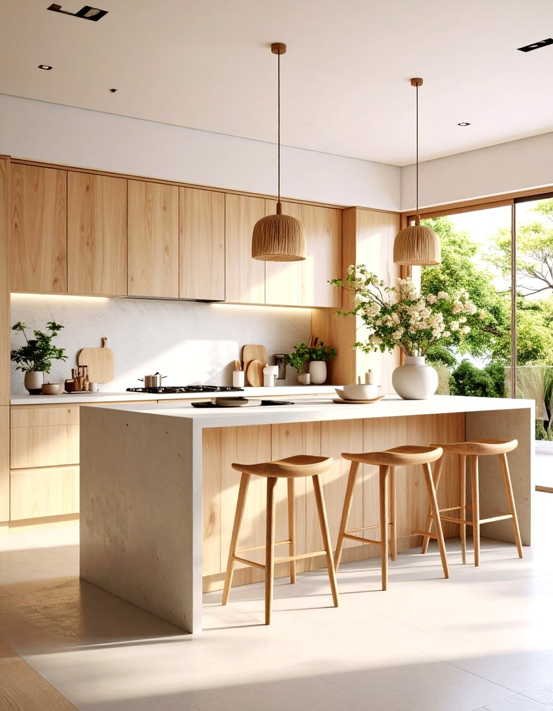
2. Add One Statement Handmade Piece
Japandi does not mean every object needs to fade into the background.
One handmade statement piece can actually make a room feel more personal rather than less.
Try an oversized ceramic vase, a sculptural bowl, a handcrafted pendant, a vintage wooden stool, or one unique piece of artwork.
Designers tend to tie Japandi to craftsmanship and handmade imperfection specifically, the kind of visual interest and character that a mass-produced piece just cannot replicate.
I would rather have one unusual piece that tells a story than ten decorative objects bought purely to fill empty space.
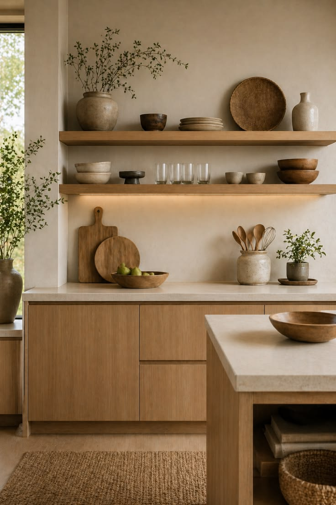
3. Create a Cozy Japandi Kitchen Breakfast Nook
If the kitchen has an unused corner, turn it into a simple breakfast nook.
Use a compact wood table, a bench with natural upholstery, and a small pendant light overhead.
This brings in the Scandinavian comfort side of Japandi without needing a pile of decorative accessories to do it.
It also makes the kitchen feel more social.
Kitchens tend to become the place where everyone ends up gathering anyway, so you might as well design around that reality instead of fighting it.
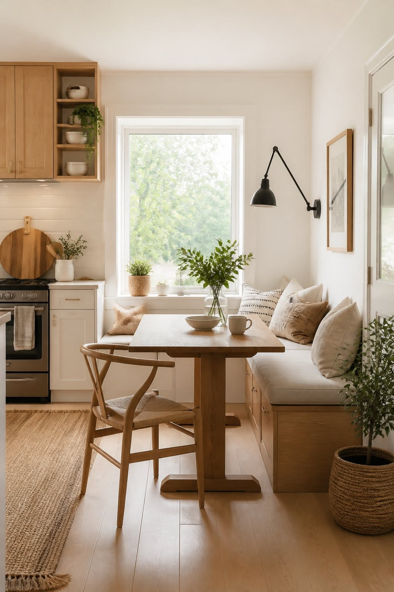
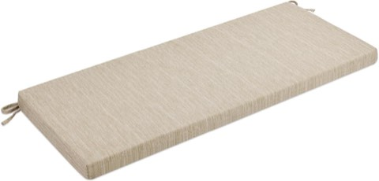
baibu Non-Slip Indoor Bench Cushion with Ties, 59 x 16 x 1.5 Inch, Beige
Shop on Amazon4. Hide Appliances Behind Japandi Kitchen Cabinetry
Minimalism gets a lot easier once appliances stop dominating the room visually.
Panel-ready refrigerators and dishwashers can disappear right into the cabinetry, creating a much cleaner visual line across the whole kitchen.
Smaller appliances can live inside an appliance garage or a dedicated cabinet instead of sitting out on the counter.
This does not mean every coffee maker needs to vanish.
A beautiful coffee station can absolutely become part of the design itself.
The real goal is controlling visual clutter, not pretending kitchens do not contain appliances at all.
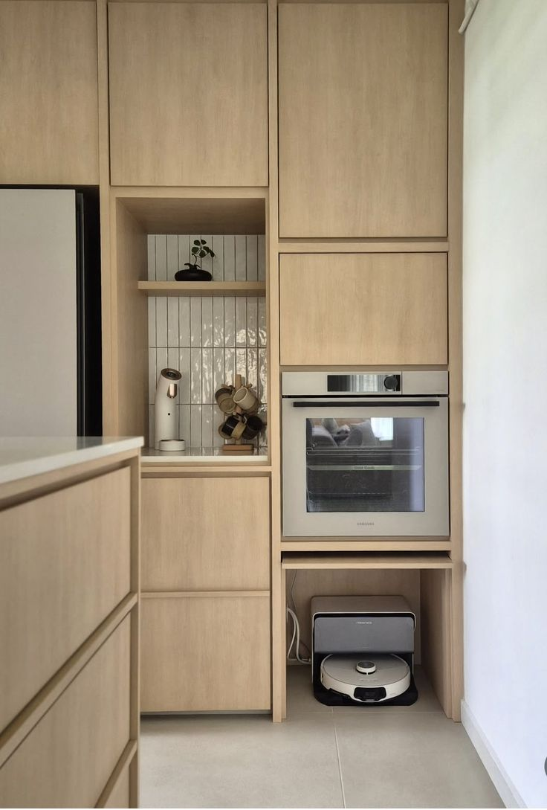
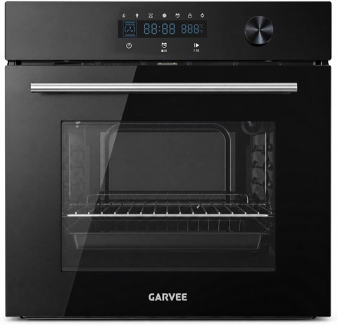
Garvee 24 Inch Built-In Single Wall Oven, 2.5 Cu Ft, Electric, 5 Cooking Functions
Shop on Amazon5. Mix Light and Dark Wood in Your Japandi Kitchen
You do not have to commit to one single wood tone throughout the whole kitchen.
In fact, a little variation can make the space feel far more collected than a single matched tone would.
Try light oak cabinets with a darker walnut stool, or medium wood cabinetry paired with a deeper-toned dining table nearby.
Just keep the undertones compatible.
Mixing warm woods together tends to work more naturally than pairing a very orange wood against a cool gray one.
Think variation, not wood chaos.
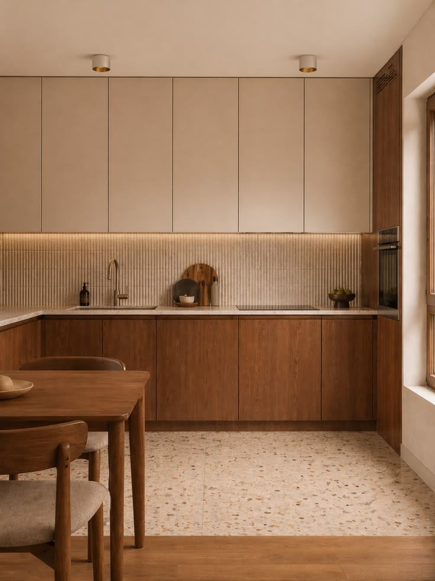
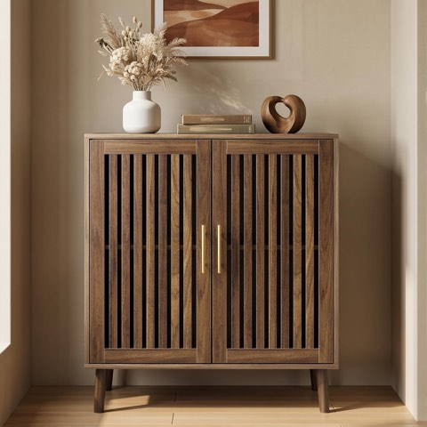
Smart FENDEE Sideboard Cabinet, 31.5 Inch, Farmhouse Buffet with Slatted Doors
Shop on Amazon6. Add Natural Wood Bar Stools
Bar stools can genuinely make or break an island's whole look.
For Japandi, look for simple silhouettes in natural materials: oak, ash, walnut, woven seats, paper cord, and rattan all work well here.
Avoid anything overly ornate.
A simple wooden stool with a curved seat often ends up looking more sophisticated than an expensive stool covered in unnecessary detail.
And your back will probably thank you for the more comfortable shape too.
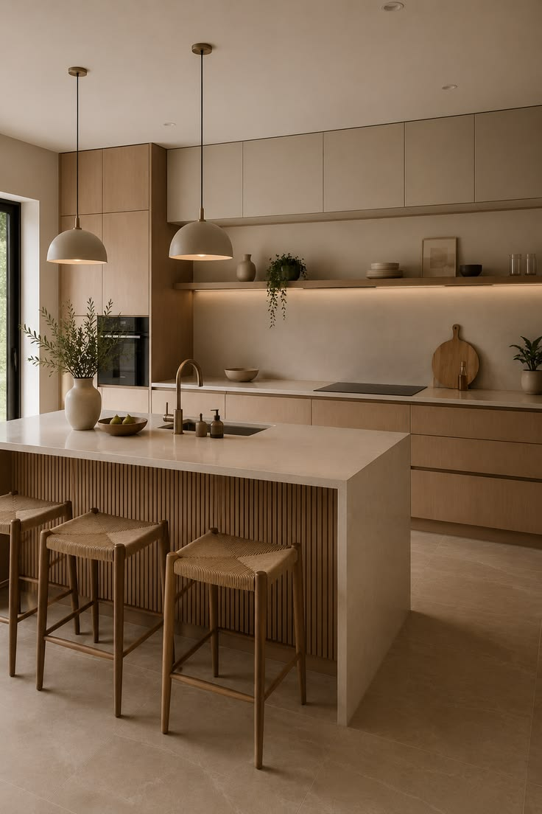
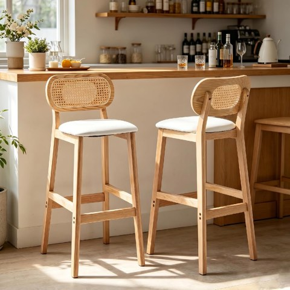
XUDREZ Rattan Counter Height Bar Stools, Set of 2, Farmhouse Wood with Cane Back
Shop on Amazon7. Try a Limewash or Plaster-Inspired Wall Finish
Want the kitchen to feel a little more architectural?
A limewash or plaster-inspired finish adds real depth without introducing a busy pattern anywhere.
The soft variation in the wall surface creates exactly the kind of subtle imperfection that fits the wabi-sabi half of Japandi so well.
Plaster, concrete, limestone, and reclaimed wood can all show up together in one space and still feel muted and cohesive, proof that different natural textures can add real complexity without ever needing a loud palette to do it.
This approach works especially well in open-plan kitchens, since the wall finish can visually tie the kitchen to the living areas around it.
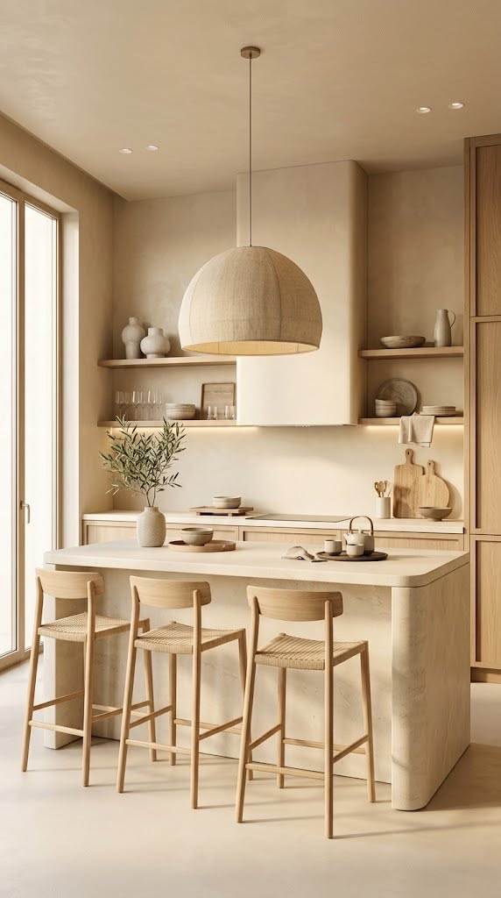
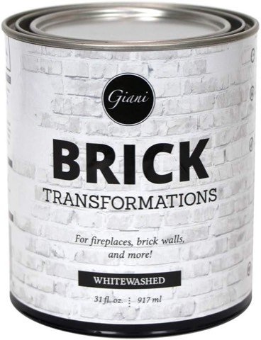
Giani Brick Transformations Whitewash Paint for Brick Walls and Fireplaces
Shop on Amazon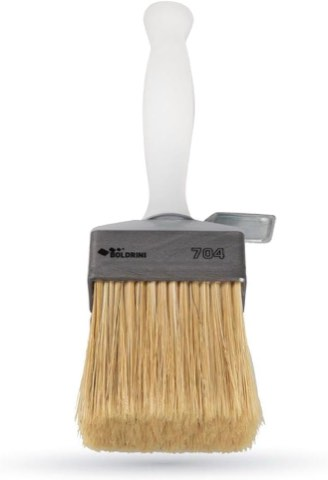
Meoded Limewash Brush, Professional Crosshatch Brush for Mineral Paints
Shop on Amazon8. Use Textured Japandi Kitchen Backsplash Tiles
A completely plain backsplash can sometimes make a minimalist kitchen feel flat rather than calm.
Instead, bring in subtle texture through handmade-look ceramic tiles, zellige-inspired tiles, plaster, or softly textured stone.
Stick to quiet colors: cream, warm white, taupe, or soft gray all work well.
I especially like slightly irregular tiles, since they add the handcrafted quality that pairs so naturally with Japandi interiors.
The backsplash should support the cabinetry, not compete with it for attention.
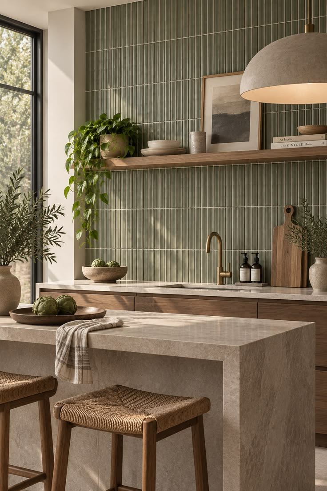
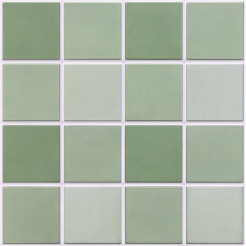
Commomy Matte 3D Peel and Stick Backsplash, Sage Green, 10 Pcs, 11.8 Inch
Shop on Amazon9. Bring Greenery Into Your Japandi Kitchen
Plants bring real life into an otherwise neutral kitchen.
Choose greenery with simple shapes rather than anything that creates visual chaos.
Olive branches, eucalyptus, herbs, small trees, and understated potted plants all work well here.
A small herb garden makes a lot of sense too, since it combines decoration with genuine function.
Japandi interiors generally lean on this connection to nature through greenery, natural materials, and a sense of indoor-outdoor flow.
You do not need to turn the kitchen into a jungle.
One beautiful plant can create enough contrast on its own.
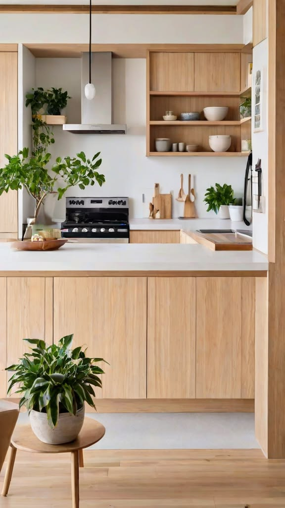
10. Style the Countertops With Intention
Japandi kitchens do not require completely empty countertops.
Instead, choose a handful of functional objects that also happen to look beautiful.
A wooden cutting board, ceramic utensil holder, stone bowl, small vase, or a simple coffee setup all fit the bill.
The easiest filter is asking whether each item either serves a purpose or genuinely adds beauty.
If the answer is no, put it away.
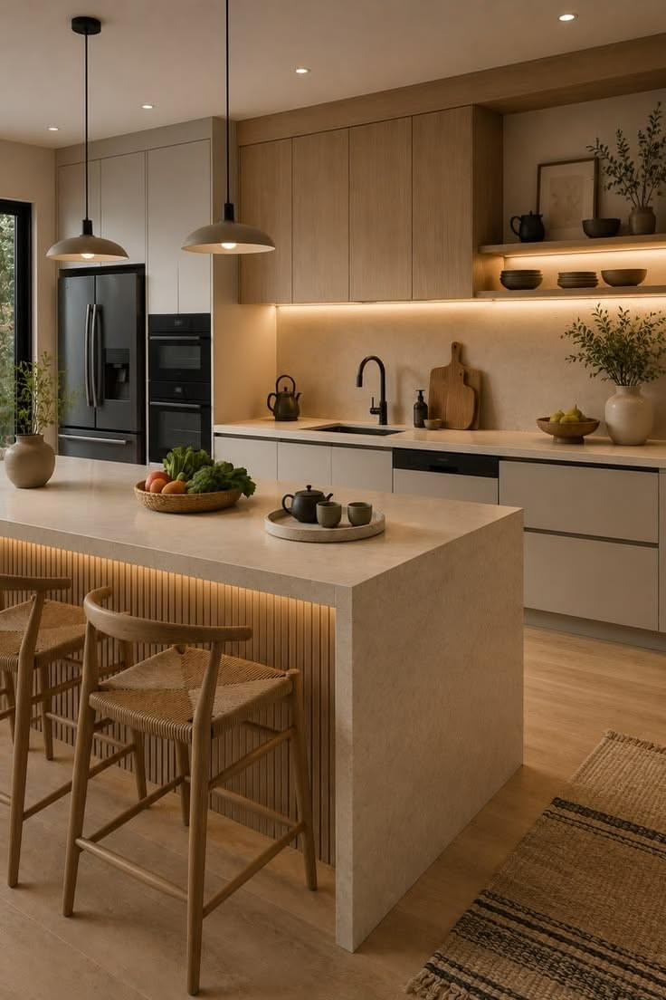
11. Add a Japandi Kitchen Island With Rounded Details
If there is enough room, consider softening a rectangular island with rounded stools, curved pendant lights, or subtly rounded corners.
The island still needs to function well.
Leave enough room for food prep, seating, and actually moving around the space comfortably.
One kitchen I particularly like combined Japandi influences with an island that doubled as a breakfast bar, built specifically because the people living there loved cooking and entertaining.
That is worth keeping in mind: good kitchen design should support the way people actually live in a space, not just how it photographs.
Pretty does not count for much if nobody can comfortably move around the island itself.
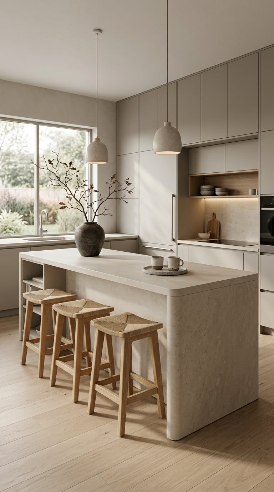
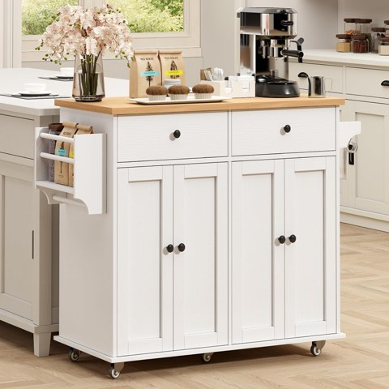
Rolling Kitchen Island Cart with Storage, 35.4 Inch, 2 Drawers and Doors
Shop on Amazon12. Choose Organic Pendant Lights
Lighting can completely change the feeling of a Japandi kitchen on its own.
Look for pendants made from paper, linen, rattan, wood, or other natural-looking materials.
Rounded silhouettes work especially well, since they soften the straight lines that cabinetry tends to create.
Paper lantern-style lighting connects especially well to Japanese-inspired interiors specifically.
Keep the lighting warm rather than extremely cool.
The goal is a kitchen that still feels inviting once the sun goes down for the day.
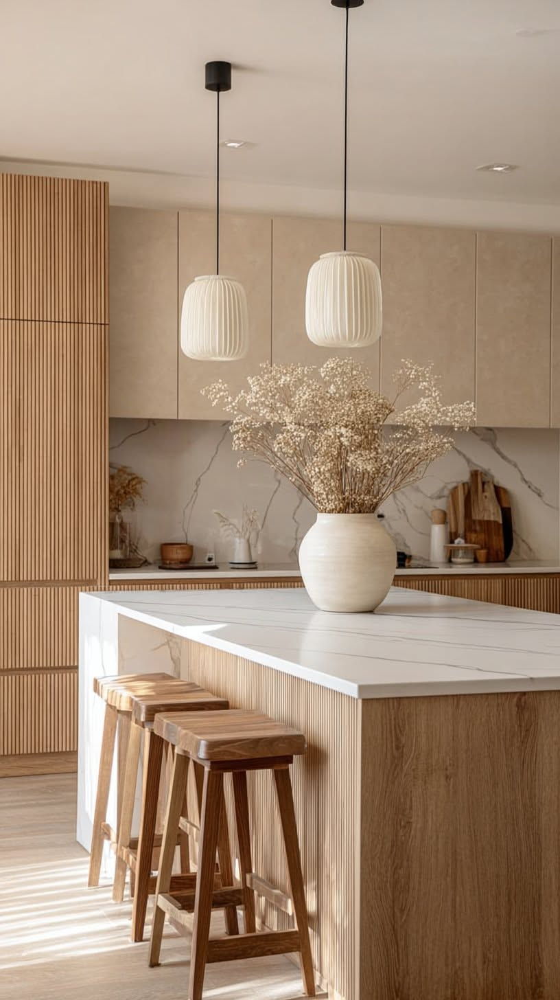
13. Use Black Accents Sparingly
Japandi kitchens often benefit from a touch of real contrast.
Black hardware, a black faucet, dark stools, or a black pendant light can all ground an otherwise soft palette.
Keep the amount controlled, though.
Too much black starts pulling the room toward industrial or straight-up contemporary instead of Japandi.
I like treating black as punctuation rather than the entire sentence.
A black faucet against warm oak cabinetry, for instance, creates just enough contrast without ever overpowering the room around it.
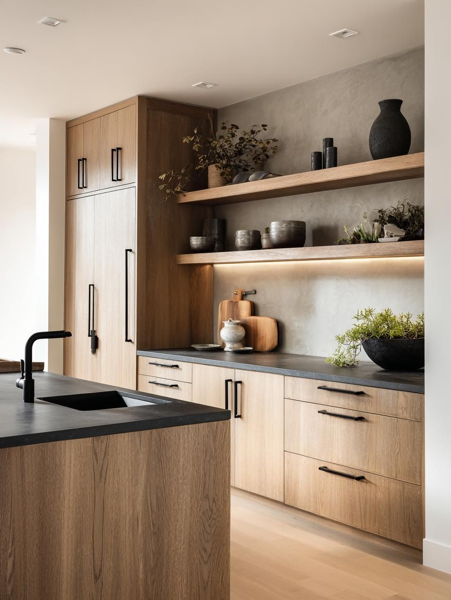
14. Bring in Handmade Ceramics
This might be one of my favorite ideas on this whole list, because handmade ceramics add character almost instantly.
Choose mugs, bowls, vases, and serving dishes with subtle irregularities built in. Cream, sand, charcoal, taupe, and muted brown all work particularly well in this context.
The tiny imperfections genuinely help a kitchen feel more personal, which is exactly why vintage, reclaimed, or handmade pieces tend to beat anything mass-produced for this specific look.
You do not need a massive collection either.
Three or four beautiful pieces usually accomplish more than twenty random accessories ever could.
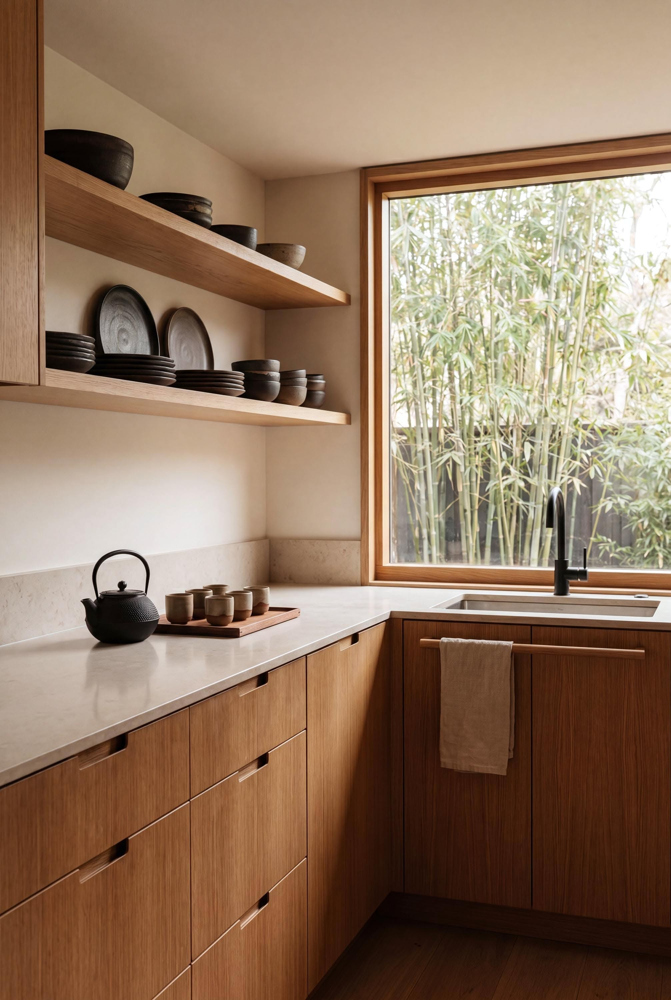
suyika Japanese Tetsubin Cast Iron Teapot with Stainless Steel Infuser
Shop on Amazon15. Add Open Wood Shelving to Your Japandi Kitchen
One or two floating wood shelves can break up a wall of cabinetry beautifully.
Use them to display only the things you genuinely enjoy looking at.
A few handmade bowls, ceramic mugs, a small plant, or a wooden cutting board can add plenty of personality on their own.
I would avoid filling every inch of the shelf.
Negative space gives each object room to actually breathe.
Japandi shelving should look curated, not like the kitchen cabinets simply ran out of storage somewhere along the way.
Marsui Large Solid Walnut Floating Shelves, Set of 2, 21.65 and 14.97 Inch
Shop on AmazonQuatish Ceramic Cereal Bowls, Set of 6, 24 Oz Soup Bowls
Shop on Amazon16. Install Flat-Panel Japandi Kitchen Cabinets
Flat-panel cabinets make an excellent foundation for this style because they keep the visual lines genuinely clean.
There is no need for elaborate cabinet profiles or decorative trim.
Let the material and proportions create the interest instead.
For an especially calm look, use integrated pulls or simple recessed handles rather than visible hardware.
A streamlined kitchen built from white oak cabinetry and paneled appliances shows exactly how this works, cabinetry creating a clean, uniform look while the natural materials keep the whole room feeling warm rather than clinical.
The trick is making simple cabinetry feel intentional rather than cheap or boring.
Good proportions make a genuinely huge difference here.
Cinnvoice Unfinished Pine Kitchen Cabinet Doors, 2 Pcs, 12 x 18 Inch
Shop on AmazonBlack Square Recessed Flush Door Pulls, 2 Pcs, 4.53 x 1.77 Inch
Shop on Amazon17. Use a Soft Greige Color Palette
Not ready to commit to an entirely wood-forward kitchen?
Try greige instead.
A combination of beige and gray creates a soft neutral backdrop that pairs especially well with natural wood.
For a Japandi kitchen, build the palette around three or four related shades rather than throwing ten different neutrals into the mix at once.
Try warm white, soft greige, natural oak, deep brown, and muted black accents.
This palette feels genuinely sophisticated without ever looking overly styled.


18. Add a Natural Stone Countertop
Natural stone brings the earthy quality that makes Japandi kitchen decor feel genuinely authentic rather than staged.
Look for materials with subtle movement rather than dramatic veining.
Limestone, travertine, soapstone, and softly veined marble can all work beautifully here.
Quartz with a natural stone appearance is also worth considering if easier maintenance matters more than the real thing.
The key is keeping the visual movement controlled.
One dramatically veined countertop can easily become the star of the whole kitchen, while Japandi tends to work better when the entire room shares the attention more evenly.
Italian Calacatta Viola Marble Cutting Board, Natural Stone, 15 x 12 Inch
Shop on AmazonMarble Cutting Board for Kitchen, 16 x 12 Inch, Italian Carrara White
Shop on Amazon19. Pair Japandi Kitchen Cabinets With Warm White Walls
A warm white wall creates the perfect backdrop for wood cabinetry and natural materials to sit against.
Instead of a stark, blue-toned white, look for creamy whites, soft ivory, or very light beige.
These shades soften the strong lines that often show up in minimalist kitchens.
Ever notice how some white kitchens end up looking almost clinical?
Warm undertones are usually what prevent that exact problem.
I particularly like this combination with oak cabinets, limestone-inspired countertops, and black or bronze hardware.
Glidden Interior Paint and Primer, White Navajo White, One Coat, Eggshell, 1 Quart
Shop on AmazonRust-Oleum Simply Home Interior Wall Paint, Linen White, Eggshell, 1 Gallon
Shop on Amazon20. Choose Warm Wood Cabinets for a Japandi Kitchen
Wood cabinetry gives a Japandi kitchen warmth and character almost immediately.
White oak works particularly well, since its natural grain adds visual interest without overwhelming the room around it.
I prefer a medium or light wood finish over anything extremely orange or glossy.
A matte finish usually looks more natural, and it pairs beautifully with stone countertops.
Mixing wood cabinetry with warm white upper cabinets is also an option, if the goal is a lighter-feeling room overall.
The goal stays simple throughout: let the wood actually look like wood.
Avoid finishes that make it read as overly polished or artificial.
GarveeHome Modern 35.4 Inch Sideboard Buffet Cabinet with Glass Doors, Oak
Shop on AmazonSamaN Interior Water-Based Wood Stain, Natural, for Furniture and Paneling
Shop on AmazonHow Do You Make a Kitchen Look Japandi?
Start with the big visual elements before worrying about accessories at all.
Cabinetry, flooring, countertops, walls, and lighting create most of the atmosphere on their own.
I usually think about a Japandi kitchen through five simple layers:
- Natural materials: wood, stone, ceramic, linen, rattan, and plaster
- Warm neutrals: cream, beige, taupe, greige, warm white, and earthy brown
- Simple shapes: clean cabinetry and uncomplicated furniture
- Texture: grain, woven materials, handmade ceramics, and stone
- Intentional styling: fewer objects, but better-selected ones
Japandi interiors commonly lean on neutral tones, natural materials, greenery, organic shapes, and a real appreciation for craftsmanship.
That shared love of craftsmanship matters more than people tend to realize going in. Install flat beige cabinets and call it Japandi, and the room will probably end up looking unfinished rather than calm.
The actual magic comes from contrast, texture, craftsmanship, and restraint working together.
Lingkai 23.6 Inch Woven Rattan Dome Chandelier, Hand Woven Pendant
Shop on AmazonModway Saoirse Woven Rope Wood Counter Stool, Set of 2, Walnut Natural
Shop on AmazonWhat Is Japandi Kitchen Design?
Japandi combines Japanese design principles with Scandinavian design.
Japanese interiors bring simplicity, natural materials, craftsmanship, and an appreciation for imperfection, while Scandinavian design contributes warmth, comfort, functionality, and approachable minimalism.
It is often described as an East-meets-West design movement that blends Japanese wabi-sabi with Scandinavian hygge, both traditions leaning heavily on simplicity, natural elements, comfort, and sustainability in their own ways.
The style essentially folds Japanese artistic elements and wabi-sabi philosophy together with Scandinavian warmth and comfort, pulling from two very different traditions that somehow complement each other remarkably well.
For a kitchen specifically, that combination makes a lot of sense.
Kitchens already have to work hard, so the Japandi approach keeps the design functional while still making the room feel genuinely peaceful.
Expect to see warm wood, earthy neutrals, clean lines, natural stone, simple lighting, organic shapes, and limited decoration throughout.
The important part is balance.
You do not need to make every surface beige and strip every decorative object out of the room.
Japandi should feel intentional, not empty.
DICOFUN Sandstone Peel and Stick Backsplash Wall Tiles, 10 Sheets, 12 x 12 Inch
Shop on AmazonDOWAN White Ceramic Bowls, Set of 4, 22 Oz, for Soup and Cereal
Shop on AmazonFinal Thoughts on Japandi Kitchen Decor Ideas
The beauty of these ideas comes from how naturally they combine practicality with warmth.
A full remodel was never actually required to get the feeling right.
Start with the biggest visual element you can realistically change.
Maybe that is warm wood cabinetry, a softer wall color, natural stone, or better lighting.
Then slowly bring in handmade ceramics, greenery, woven textures, and a few genuinely meaningful pieces over time.
Most importantly, resist the urge to decorate every empty corner just because it is empty.
A good Japandi kitchen should give your eyes somewhere to actually rest.
That is the real appeal, for me at least.
The kitchen still feels like a place where people cook, eat, talk, make coffee, leave a cutting board on the counter, and occasionally forget to unload the dishwasher.
It just does all of that with a little more calm running underneath.
And honestly, if a kitchen can make Monday morning coffee feel even slightly more peaceful, that is a pretty successful design choice by any measure.